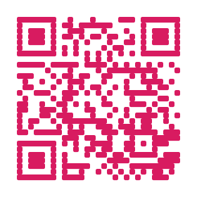

Generator Instan
QR Code langsung terbentuk otomatis saat Anda mengetik atau menempel teks maupun link.
konverterQR Khresmupu membantu Anda membuat QR Code dari link, teks, Wi-Fi, kontak vCard, dan WhatsApp. Gratis, tanpa daftar, dan nyaman dipakai dari HP maupun komputer.
Portofolio Khresmupu
Scan untuk lihat karya

portofolio-khresmupu.netlify.app
Membuat dan membaca QR Code jadi cepat, rapi, dan tanpa biaya tersembunyi.
QR Code langsung terbentuk otomatis saat Anda mengetik atau menempel teks maupun link.
Format siap pakai untuk jaringan Wi-Fi, kartu kontak digital, dan tautan chat WhatsApp.
Atur warna pola dan latar QR, pilih preset palet, dan tentukan resolusi hingga 800 x 800 px.
Pindai QR dari kamera HP atau laptop, atau unggah gambar lengkap dengan crop untuk area yang presisi.
Simpan kartu QR sebagai PNG tajam atau cetak langsung ke PDF dengan tata letak yang rapi.
Tidak perlu daftar dan kami tidak menyimpan isi QR Anda. Pemindaian berjalan di browser Anda.
Pilih jenis QR yang Anda perlukan dan langsung mulai.
Pilih tipe data: link atau teks, Wi-Fi, kontak vCard, atau WhatsApp, lalu isi datanya.
Tambahkan judul, keterangan, dan catatan bawah, lalu sesuaikan warna sesuai selera.
Simpan sebagai PNG resolusi tinggi atau cetak ke PDF, siap ditempel di toko atau meja.
Ya. Semua fitur gratis tanpa batas pemakaian, tanpa batasan unduhan, dan tanpa perlu membuat akun.
Tidak. QR Code yang dihasilkan bersifat statis: data tertanam langsung di pola gambarnya, sehingga tidak kedaluwarsa selama tujuan yang dimuat (misalnya sebuah link) masih aktif.
Kami tidak meminta akun dan tidak menyimpan isi QR Code Anda. Perlu diketahui, gambar QR dirender oleh layanan pihak ketiga (QR Server), sehingga isi QR dikirim ke layanan tersebut saat QR dibuat. Hindari membuat QR untuk informasi yang sangat rahasia. Pemindaian QR dari kamera atau gambar diproses langsung di perangkat Anda.
Buka bagian “Kustomisasi kartu & warna”, pilih resolusi 800 x 800 px, lalu klik Unduh PNG atau Cetak / Simpan PDF.
Bisa. Pilih jenis QR Wi-Fi, lalu atur tipe keamanan ke “Tanpa kata sandi (jaringan terbuka)”.
Buka tab Scan QR, lalu unggah atau tarik-lepas gambar QR ke kotak unggah. Jika belum terbaca otomatis, Anda bisa memotong (crop) area QR agar lebih jelas.
konverterQR Khresmupu adalah alat web gratis untuk membuat dan membaca QR Code. Anda bisa mengubah link, teks, kredensial Wi-Fi, kontak vCard, hingga nomor WhatsApp menjadi QR Code dalam hitungan detik, lalu menyesuaikan warna dan tampilannya agar cocok dengan identitas toko atau bisnis Anda.
Cocok untuk pelaku UMKM yang ingin memasang QR menu digital di meja, kafe yang membagikan Wi-Fi tamu, profesional yang ingin berbagi kartu nama digital, serta siapa pun yang butuh QR Code cepat tanpa memasang aplikasi.
Semua fitur generator dan scanner tersedia di halaman Tools QR.